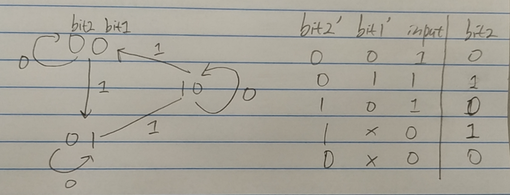

136. Single Number
389. Find the Difference
* 268. Missing Number (tricky)
260. Single Number III
137. Single Number II
Desc:
#136. given an array of integers that each value appears twice except one value only appear once. find the unique number.
#389. given two string s and t (only lowercase). t is generated by shuffling s and add one more char. find the added char in t.
#268. given an array of integers with length = n, and it contains n distinct numbers in range [0, n] there must miss one number, find the missing number.
#138. given an array of integers that each value appears twice except two values appear once. find the two unique numbers.
#137. given an array of integers that each value appears three times except one value only appear once. find the unique number.
Sol: #136. Bit-manipulation.
How to consider questions of bit-manipulation?
Don't consider a number, instead think about bit collections that constructs by bit on same position of each number.
[1,3,3,2,2] => [01, 11, 11, 10, 10]
=> [
[0,1,1,1,1], // bit at second position
[1,1,1,0,0], // bit at first position.
]
For #136. if the unique number's bit on a position is 1, then it must cause this bit collection has odd number of 1.
What is XOR operation?
XOR doesn't treat a number as a whole, instead, it operate/update according to bit collection.
XOR (starting with 0), it will repeat +1 and -1 when encountering the next one in a bit collection. (or say it will return 1 if the # of 1 in a bit collection is odd, otherwise 0).
[
[0,1,1,1,1] => return 0.
[1,1,1,0,0] => return 1. // 01 construct 1. 1 is the unique number.
]
// moreover, XOR doesn't care about the order of the 1 and 0 is a bit collection.
#389. if you concatenate the two string, then it's same as #136.
second solution: because we know only lowercase, we can use an array (hasmap) to count each char.
#268. missing number. Math solution: [0..n] sum = n * n + 1) / 2 - sum of the array
index = 0 ... n-1, element = 0...n missing one. we add one index value = n. then it becomes [0..n-1, 0..n (missing one), n] => find unique number.
#138. applying the #136's solution gives the XOR of the two unique number. The xor result is the difference between the two unique numbers.
int xor = 0b110; // first bit are same, second and third bits are different.
We can use this number to divide the original array into two groups. e.g. One group with the second bit = 1, another group with the second bit = 0. With this, we know that two unique numbers must belong to different group.
And then we can apply the XOR trick again.
#137. if the unique number's bit on a position is 1, then its bit collection must have 3n + 1 1s, otherwise 3n 1s.
int [] count = new int[32];
for(int num: nums){
for(int i = 0; i < 32; i++){
count[i] += (num >> i) & 1; // get (32-i)-th position 1.
}
}
int result = 0;
for(int i = 0; i < 32; i++){
if(count[i] % 3 != 0){
result |= 1 << i;
}
}
return result;
space optimization with two flags
int bit1 = 0;
int bit2 = 0;
private void increment(int position){
int bit2_ = (bit2 >>> position) & 1;
int bit1_ = (bit1 >>> position) & 1;
if(bit2_ == 0 && bit1_ == 0){ // 0->1
bit1 |= 1 << position;
}else if(bit2_ == 0 && bit1_ == 1){ // 1->2
bit2 |= 1 << position;
bit1 &= ~(1 << position);
}else if(bit2_ == 1 && bit1_ == 1){ // 2->0
bit2 &= ~(1 << position);
}
}
public int singleNumber(int[] nums) {
for(int num: nums){
for(int i = 0; i < 32; i++){
if(((num >>> i) & 1) == 1){
increment(i);
}
}
}
return bit1;
}
Runtime optimization with state machine
// state machine
we need to keep track of the number of 1 in each bit collection. like above, we do 0->1->2->0->1->2.
However, we have to iterate every bit in a number to do that, and it involves shift operations.
we acutally can handle all the 32 bits at one operation with state machine.
we still use 2 integers (bit1, bit2) represent the state. now only think about the i-th bit of the bit1, bit2 and the given number.
Here is the state machine and truth table of bit2.

We can found the only two cases make bit2 be 1. and we can express using ~ & |. So we will the solution below.
When thinking about a bit collection, we will not be able to change the bit's position, in other words, we cannot use shift operation.
int bit1 = 0, bit2 = 0;
for(int input: nums){
int oldbit1 = bit1;
int oldbit2 = bit2;
bit1 = (~oldbit2 & ~oldbit1 & input) | (~oldbit2 & oldbit1 & ~input);
bit2 = (oldbit2 & ~input) | (~oldbit2 & oldbit1 & input);
}
return bit1;